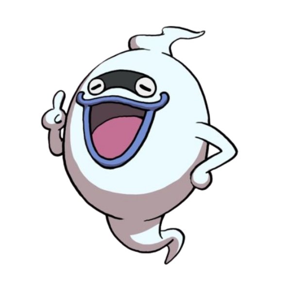
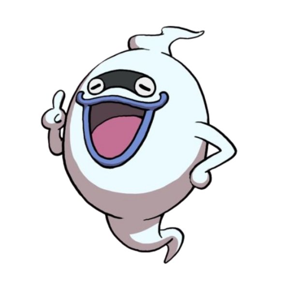

Al menú principal:
Los Yo-kai son una clase de criaturas de la mitología japonesa y a excepción de algunos casos especiales son invisibles al ojo humano. Algunos tienen partes animales, partes humanas, o partes de los dos. Existe la posibilidad de convertirse en yo-kai despues de la muerte, o hasta que un objeto inanimado se convierta en uno.
Los yo-kai pueden ser divididos en diferentes grupos, estos grupos son denominados tribus y voy cubrir la 8 originales con los yo-kai más caracteristicos de cada una
Los yo-kai que forman parte de este grupo se caracterizan por ser bonitos, agradables, tiernos, encantadores o amistosos.
Algunos integrantes de esta tribu son:
Komasan
Rango:
Jibanyan
Rango:
La Tribu Misteriosa es una tribu que, normalmente tienen una apariencia peculiar.
Algunos integrantes de esta tribu son:
Cotilleja
Rango:
Telespejo
Rango:
Algunos integrantes de esta tribu son:
Felisonte
Rango:
Abuzampa
Rango:

Algunos integrantes de esta tribu son:
Nomevén
Rango:
Enciélago
Rango:
Algunos integrantes de esta tribu son:
Ayay
Rango:
Cantonio

Rango:

Los integrantes de esta tribu suelen contar con cuerpos densos y un espíritu tenaz
Algunos integrantes de esta tribu son:
Robonyan
Rango:
Inquielefante
Rango:
Algunos integrantes de esta tribu son:
Shogunyan
Rango:
Sacoco
Rango:
Algunos integrantes de esta tribu son:
Venocto
Rango:
Noko
Rango:
Este ha sido un primer contacto con el mundo yo-kai, solo se ha rascado la superficie pero aún asi se te ha revelado a ti mi querido lector que no estás solo en este mundo, es posible que te tomes esta información como una forma de entretenimiento más, y no te judgo por ello es algo complicado de creer, sin embargo tepropongo algo, intenta no pensar en como podria ser posible y planteate "¿Por qué no?"
Y recuerda mi corporeo amigo, en caso de que presencies algún suceso extraño o fuera de lo común tienes que pensar en esta frase:
Autor del articulo:
 
